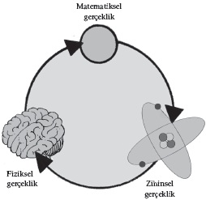

Kuantum dünyasının ötesinde enformasyon âlemi yatmaktadır
Fiziğin cevapladığı en son soru bu olacaktır, tabii eğer mümkünse. Kuvvetlere dair büyük bir bileşik kuram kurmak iyidir güzeldir; kuantum kütleçekiminin, yani çok küçük olanla ilgili bilimi çok büyük olanla ilgili bilimle birleştirecek kuramın izini sürmek heyecan verici ve yararlıdır. Ama bunların hiçbiri temel soruyu cevaplamaz: Gerçekliği oluşturan nedir?
Bazıları bu sorunun bilimin erimi dışına uzandığını savunabilir. Fakat görünürde imkânsız sorulara cevaplar aramak fiziğin doğasında vardır. Fizik tarihi sonradan çok mümkün olduğu anlaşılan “imkânsız” işlerle doludur. Arşimet’in yenilikçi düşünme biçimiyle kadim dünyayı hayrete düşürdüğünü unutmak kolaydır. Arşimet, kralın tacının som altından yapılıp yapılmadığını söylemenin bir yolunu bulmuş olsa da olmasa da hayatının Roma hükümdarlığı tarafından korunmasını sağlamaya yetecek bir bilimsel şöhret kazanmıştır. Keza, Newton’ın kütleçekimin nasıl işlediğine ilişkin betimlemesi bugün bize apaçık görünse de formüle edilmesi o dönemde bir güç denemesiydi.
Aziz Augustinus manyetizmayı bir mucizeden farksız anlatmıştı; ama artık elektromanyetik fenomenler yığınının arkasındaki mikroskobik süreçleri biliyoruz. Geçmişte yapılan fizik bugün biraz hayal gücünden yoksun görünüyor; gerçekten de kavramlar bize o kadar düz geliyor ki birçoğunu çocukken öğreniyoruz. Peki, geleceğin çocukları da gerçekliğin temel doğasına ilişkin derslerde sıkılacak mı?
Mükemmel Bir Âlem
Gerçekliğin doğası, insanların en azından kadim Yunanlılardan bu yana incelemeye çalıştığı bir yoldur; gerçekliğin doğasına dair kendi arayışımızın izlerini de Yunanlıların zamanına kadar götürebiliriz. Yunan’da, bu soruyla ilgili birkaç düşünce ekolü bulunuyordu. Herhalde en etkilileri de Platon’du; Platon fiziksel oluşumların mükemmel soyutlamalarının bulunduğu bir âleme inanıyordu. Maddi dünyadaki her şey varlığını bu “ideal biçimler”den alıyordu ve her şey ideal nesnenin bir gölgesinden başka bir şey değildi.
<>
“O halde Toprak’a kübik şekli verelim, dördünün
en hareketsizidir ve bütün cisimlerin en
şekillendirilebilir olanıdır; en kararlı temele sahip olan
mecburen böyle bir doğaya sahip olacaktır.”
PLATON
<>
Ancak ve ancak zihnin eğitilmesi yoluyla erişilebilen bu âlem, yalnızca ağaçlar ve dağlar gibi fiziksel nesnelerle ilgili değildir. Aynı zamanda matematiksel fikirler için de geçerlidir: Platon ideal katıların bulunduğu ideal bir matematiksel gerçeklik hayal etmişti. Bu beş geometrik şekil matematiksel olanla, fiziksel olan arasında bir bağlantı yaratıyordu. Örneğin Timaeus başlıklı diyalogda Platon küp şeklini Toprak’la ilişkilendirmişti: “O halde Toprak’a kübik şekli verelim, dördünün en hareketsizidir ve bütün cisimlerin en şekillendirilebilir olanıdır; en kararlı temele sahip olan mecburen böyle bir doğaya sahip olacaktır.” Benzer bir mantıkla tetrahedronu ateşle, ikosahedronu suyla, oktahedronu havayla, dodekahedronu “gizemli beşinci elementle”, yani özle ilişkilendirmişti.
Kulağa mistik bir laf salatası gibi gelebilirse de idealler âlemi kavrayışını tümüyle bir kenara bırakamayız. Modern fizikte, gerçekliğin nihai doğasına ilişkin arayışta kullanmak üzere toplanmış bütün araçların kökleri matematiğe uzanmaktadır; matematikçiler, matematiğin zihinlerimizin bir icadı mı, yoksa matematikçilerin keşfiler yapmak üzere dolandığı soyut bir dünya mı olduğu konusunda hâlâ bir anlaşmaya varamamıştır.
Matematikçi Roger Penrose, gerçekliğin ne olduğunu anlamak istiyorsak önce belki de bu temel meseleyi halletmemiz gerekeceğini söylemiştir. Penrose’un iddiasına göre, gerçekliğe ilişkin en iyi tanımımız bir tür üçlüyü içerebilir: İçlerinde sadece fiziksel gerçeklik seçilebilir; çünkü “zihinsel gerçeklik” –yani bilinçlilik– beyinlerimiz tarafından kurulur ve ancak denklemlerimiz ile fizik kanunlarımızın fiziksel dünyamıza paralel olarak var olan bir “matematiksel gerçeklik”ten geldiğine inanmamız halinde tanımlanabilir.
Penrose kağıt-makas-taş oyununun felsefi versiyonunda, üç gerçeklik arasında döngüsel bir bağımlılık olduğunu ileri sürer. Elektron gibi temel fiziksel parçacıkları ancak matematiksel denklemler üzerinden betimleyebiliriz, dolayısıyla matematiksel gerçeklik fiziksel gerçekliğe basar. Fakat beynin nöronları şeklindeki fiziksel gerçeklik, zihinsel gerçekliği doğurur. Matematik soyut olduğu için zihinsel gerçeklik matematiksel gerçekliği doğurur. Matematiksel fiziksele, fiziksel zihinsele, zihinsel matematiksele basar.

GERÇEKLİK ÜÇLÜSÜ
Yeni Bir Gerçeklik
Gelgelelim, öyle görünmektedir ki bu üç gerçeklik kavrayışının da ötesinde yatan bir şey vardır; gerçekliğin nihai doğasına ilişkin kavrayışımızı çok daha soyut bir âleme doğru iten bir şey. Bu şey enformasyondur. Enformasyonu zihinlerimizde tutarız, enformasyon matematiksel olarak yönlendirilebilir ve her zaman fiziksel şeylerle birleştirilebilir: Enformasyon üzerine oturacağı bir şey –kağıt üzerindeki bir mürekkep lekesi, DNA, bir ışık fotonu– olmadan var olamaz. İşte bu yüzden, IBM araştırmacısı Rolf Landauer bugün hâlâ kulağa tuhaf gelen bir söz sarf etmiştir: “Enformasyon fizikseldir.”
<>
“Enformasyon fizikseldir.”
ROLF LANDAUER
<>
Landauer bu sözle enformasyonun soyut bir kavram, iletişimle aktarılan şeye ilişkin münasip bir kısaltma olmadığını kast ediyordu. Enformasyon nerede karşınıza çıkarsa çıksın, ayrılmaz bir biçimde fiziksel bir sisteme bağlıdır. Bilgi bir DNA şeridinde moleküllerin dizilimiyle taşınır, hayatın yayılmasını ve evrilmesini sağlar. Bir elektrik devresinde, kondansatördeki elektrik yükünde şifrelenir; bilgisayar dediğimiz enformasyon depolama ve işleme aygıtlarını yapmamızı mümkün kılar. Bir ışık fotonunun kuantum haline yazılır, telefon konuşmalarının optik fiberlerle gönderilmesini sağlar. Enformasyon nerede olursa olsun, fiziksel bir biçim alır.
Bu fikir “Landauer ilkesi” olarak bilinir ve enformasyon hakkında devrimci bir düşünme biçiminin kıvılcımını çakmıştır. Enformasyon fizikselse fiziksel olan her şey aslında enformasyon olabilir mi? Bunun doğruluğuna inanmak için elimizde en az üç tane iyi gerekçe bulunmaktadır. İlki, görünüşe bakılırsa enformasyonun evrene hükmeden kanunlara ürkütücü bir tuhaflıkla bağlı olmasıdır.
Enformasyonun Hızı
Herhalde kozmosa dair anlayışımızın en derinlerine kök salmış kavrayış, özel görelilik kanununun ortaya koyduğu aşılamaz bir hız sınırı olduğu iddiasıdır: Bu hız sınırı ışık hızıdır (bkz. Zaman Nedir?). Bu kavrayış astronomi ve kozmolojide sayılamayacak kadar çok fenomeni anlamamızı sağlamıştır. Fakat ışık hızının sınırlı olması, enformasyon hızının sınırlı olmasından kaynaklanıyor olabilir. Görelilik kuramı aslında enformasyon kuramının bir yan ürünü müdür?
Enformasyon kuramı sağlam bir şey olarak başlamamıştır. 1940’larda Bell Laboratuarları’nda çalışan matematikçi ve mühendis Claude Shannon tarafından geliştirilmiştir. Shannon’ın çalışmasının ana eksenini, enformasyonun bir telefon telinde ya da bir elektrik devresinde sıkıştırılma hızını artıracak yollar bulmak oluşturuyordu. Shannon bundan en iyi şekilde yararlanmak için enformasyonu “sıkıştırma” teknikleri geliştirmiş, aynı zamanda temel bazı sınırlar bulmuştu. Her iletişim kanalının azami bir limiti olduğunu, enformasyonun aktarım sırasında kaybolmadan gönderilebileceği bir azami verimlilik olduğunu bulmuştu.
Enformasyonun ölçüsü ikili sayı sisteminin (binary digit) kısaltılmış hali olan “bit”tir. Örneğin bilgisayarlar ikili sayı sistemiyle işler: Her rakam, her yönerge bir 0’lar ve 1’ler dizisi olarak şifrelenir. Enformasyon iki seçenekten fazlasını sunan biçimlerde depolanabilirse de – örneğin DNA dört “temel” molekül kullanır: adenin, thymin, sitosin, guanin– bunlar her zaman ikili bir sayı sisteminden kurulabilir. İki seçenekli bit sistemi enformasyonu depolamanın ve aktarmanın en basit, en temel yoludur.
Enformasyon kuramındaki diğer önemli etken, enformasyon kanalının “bant genişliğidir.” İster bir internet bağlantısı olsun, ister bilgisayarınızda hafıza ile işlemci arasındaki bağlantı olsun bant genişliği her saniye kaç bit aktarılabileceğinin ölçüsünü ortaya koyar. Bütün enformasyon kanalları, enformasyonun aktarımı sırasında hatalara yol açabilecek belli miktarda gürültü içerecektir. Örneğin NASA Dünya’nın atmosferi yoluyla radyo sinyalleri gönderdiğinde bu sinyal atmosfer koşullarıyla değişebilir, 0’lar 1’e, 1’ler 0’a dönüşebilir.
Shannon bunun üzerinde çalışmış, belli bir sinyal-gürültü oranı ve bant genişliğinde, enformasyonun kanaldan kayıpsız aktarılmasının bir üst sınırı olduğunu ortaya koymuştur. Son cep telefonu ve uydu televizyonu sistemleri bu “Shannon sınırının” yüzde 1’i içinde çalışmaktadır. Gelgelelim bu sınıra yaklaşamazlar ya da onu aşamazlar. Durum biraz görelilik kuramında ışık hızına benzer: Bu temel sınıra ne kadar yaklaşırsanız daha iyisini yapmak o kadar zorlaşır.
Enformasyon neden ışık hızına benzemek zorundadır? Bunun sebebi tıpkı ışık gibi, enformasyonun da fiziksel gerçekliğin temelinde yatan yapıyla ilişkili olması olabilir mi? Sayıları giderek artmakta olan araştırmacılar, özellikle de kara deliklerle ilgili araştırmalar yürütenler kesinlikle buna inanıyor.
Enformasyon Nereye Gitti?
Kara delikler, enformasyonun kısmen gerçekliğin doğasıyla ilgili sorumuzun cevabını oluşturduğunu düşünmek için elimizdeki ikinci gerekçedir. Bir kara deliği çevreleyen, “olay ufku” diye bilinen küresel bölgeye giren hiçbir şey buradan çıkamaz. Bu da kara deliklerin aslında enformasyonla dolu olduğu anlamına gelir. Yuttukları her şeyde atomik durumlar, parçacıkların spinleri vs. olarak şifrelenmiş enformasyon vardır. Peki, bu enformasyona ne olur?
1970’lerde Stephen Hawking kara deliklerin “Hawking ışınımı” salarak yavaş yavaş buharlaştığını gösterdi. Sorun şudur ki bu ışınım hiçbir enformasyon içermez. Fizik kanunları, tıpkı enerji gibi enformasyonun da ortadan kaldırılamayacağını buyurur; bu da enformasyonun bir yere gitmesi gerektiği anlamına gelir. Yıllarca süren tartışmaların ardından, fizikçiler artık enformasyonun, kara deliğin “olay ufku”ndaki, içeriye düşen madde ya da ışık için geri dönüşün olmadığı noktadaki uzay ve zamanın mikroskobik yapısına şifrelendiğine inanıyor.
Olay ufku iki boyutlu bir yapı –kara deliği çevreleyen kürenin yüzeyi– olduğundan bu, atomlar gibi üç boyutlu nesneleri betimleyen enformasyonun iki boyutlu bir yüzey üzerine şifrelenebileceği anlamına gelmektedir. Bazı araştırmacılar bu fikirden yola çıkarak bütün bir evrenin aynı biçimde gözlenebileceğini göstermişlerdir. Evrenimizin sınırı esasen, bir kürenin iki boyutlu yüzeyidir. Kürenin içinde varmış gibi görünen enformasyon aslında onu çevreleyen iki boyutlu yüzey üzerinde tutuluyor olabilir. Tıpkı görünürde üç boyutlu bir hologramın, ışığın iki boyutlu bir yüzey üzerine titiz biçimde tasarlanarak yansıtılmasının ürünü olması gibi, bizim üç boyutlu gerçekliğimiz de evrenin kenarında tutulan enformasyondan yansıtılan bir hologram olabilir pekâlâ. Başka bir deyişle fiziksel olduğunu düşündüğünüz her şey enformasyondan kaynaklanmaktadır.
Bu fikrin deneysel olarak desteklendiğini gösteren bir emare bile vardır. 2008’de ABD’li parçacık fizikçisi Craig Hogan holografik yansıma fikrini nasıl sınayacağı sorununu çözmeye çalışıyordu. Evrenin sınırının ancak sınırlı miktarda bilgi tutabileceğini ve enformasyon evrenin üç boyutlu uzamına yansıtıldığında bu sınırın bizim fiziksel gerçekliğimizde bir tür çözünürlük etkisi olarak tezahür edebileceğini ortaya çıkardı. Hogan yeterince küçük ölçeklerde görebilecek olsak aslında noktalar göreceğimizi, uzay ve zamanın kumlu görüneceğini ileri sürdü.
Ölçeklerin işe dahil olması, bunun ancak sahip olduğumuz en duyarlı aygıtlarla tespit edilebileceği anlamına geliyor; yani iki kara deliğin çarpışması gibi şiddetli kozmolojik olayların sonucu uzay ve zamanda oluşan dalgacıkları araştıran kütleçekimsel dalga detektörleriyle. Böylece Hogan uzay-zamanın kumlu olmasının bu aygıtları nasıl etkileyeceğiyle ilgili güzel fikirlerini Almanya’nın Hanover kentinde bulunan kütleçekimsel bir dalga detektörü olan GEO600’deki bilim insanlarına gönderdi.
Anlaşıldığı üzere GEO600 araştırmacıları detektörlerindeki gürültü yüzünden sorunlar yaşıyorlardı. Ve bu gürültü, Hogan’ın beklediği sinyalle tam olarak aynı özellikleri gösteriyordu. Bu, Hogan’ın sorusunu çözüme bağlayan bir kanıt olmasa da “holografik ilke”nin –her şeyin nihayetinde evrenin kenarında tutulan enformasyondan oluşuyor olması– en azından ciddiye alınmaya değer olduğunu düşündürmektedir.
Kuantum Enformasyonu
Enformasyonu bu kadar önemli addetmemizin üçüncü gerekçesi, kuantum kuramından, şeylerin atomaltı ölçeklerde nasıl davranacağına ilişkin elimizdeki en iyi kurallar dizisinden gelmektedir. Kuantum kuramı hayret verici derecede başarılı olmuş, tahminleri deneylerde hiç başarısızlığa uğramamıştır. Fakat gerçekliğin doğasını anlamaya verilebilecek nihai cevap değildir. Atomaltı sistemlerde ne olduğunu betimlemenin bir yolunu sunsa da şeylerin neden davrandıkları gibi davrandıklarını söylemez (bkz. Schrödinger’in Kedisine Ne Oldu?). Aslında bu kuram bizi, bu sistemlerin davranışlarının birçok yönüyle ilgili olarak kafa karışıklığı içinde bırakmaktadır; filozofların nesnel gerçekliğin yokluğu ve deneysel bilimin sınırlarıyla ilgili sözler sarf etmesine yol açmaktadır.
Kuantum kuramının bize verdiği sınırlı görüşün yarım düzine felsefi yorumu bulunmaktadır. Aralarında bir tercih yapmanın imkânı yoktur, çünkü hepsi de deneylerle tutarlıdır. Öyle görünüyor ki tek çıkış yolu, kuantum kuramının ardında neyin yattığını bulmaktır. Kuantum kuramıyla enformasyon arasında bariz bir bağlantı vardır: Bitler ve kuanta üzerinden, hem enformasyon kuramı hem kuantum kuramı temel bölünemez bir niceliğe dayanmaktadır. Fakat iki kuram arasında daha ince başka bir bağlantı da vardır. Kuantum dünyasının tuhaflığı, bir kuantum parçacığının taşıdığı enformasyon miktarının sınırlarından kaynaklanıyor olabilir.
Böyle düşünmemizin bir gerekçesi, bir kuantum sistemi hakkında mükemmel kesinlikte bir şeyler biliyorsanız hiç bilmediğiniz başka şeyler olduğunu söyleyen Heisenberg’in belirsizlik ilkesidir (bkz. Her Şey Nihayetinde Rastgele midir?). Heisenberg bu ilkeyi kuantum kuramının denklemlerinden çıkarmıştır ve şimdiye kadar da bunun “böyle olduğunu” kabul etmek zorunda kaldık. Gelgelelim enformasyon kuramının çeşitli yönlerini değerlendirerek biraz daha tatmin edici bir açıklamaya ulaşabiliriz.
Elektron gibi bir kuantum parçacığının spin denilen bir özelliği vardır; spin ikilidir (yukarı ve aşağı) ve üç uzamsal boyutun herhangi birinde ölçülebilir. Bir elektronun spini ancak bir bit enformasyon taşıyabiliyorsa elektron üzerinde yapılabilecek ilk ölçüm bu biti kullanacaktır; başka boyutlarda yapılan ölçümlerden gelecek başka spin enformasyonu yoktur. Daha sonra yapılacak böyle bir ölçümün vereceği sonuç rastgele olacaktır; Heinsenberg’in belirsizlik ilkesi tam da bunu öngörür.
Enformasyon kuramının, muamma niteliği taşıyan kuantum dolaşıklığı fenomenini de anlamamızı sağlayabileceği yönünde işaretler vardır; kuantum dolaşıklığı iki parçacık arasında “tuhaf” bir bağlantıyı mümkün kılar. Dolaşıklık kesinlikle enformasyonun taşınması ve paylaşılmasıyla ilgilidir. Basit bir dille söyleyecek olursak, dolaşıklık iki parçacığın etkileşime girmesinin ardından, her parçacığın kuantum halinin –konumu, momentumu, spini vs.’nin tam tanımı– o parçacıkta kalmamasını, iki parçacık arasında paylaşılmasını buyurur.
Dolaşıklığın tuhaflığı parçacıkların “tanımsız” bir kuantum haline yerleşebilecek olmasında yatar. Tıpkı gözlem yapılıncaya dek Schrödinger’in kedisinin diri ve ölü olmasında olduğu gibi (bkz. Schrödinger’in Kedisine Ne Oldu?), biri spinlerini ölçünceye kadar dolaşık çiftin spinleri karışık olabilir; aynı anda hem “yukarı” hem “aşağı” olabilirler.
Bir ölçüm bir parçacığı belli bir spine zorladığında, diğer parçacığın spini belirgin olacaktır. Einstein bundan nefret ediyordu; çünkü bir parçacığın gözlenmesi, birbirlerinden ne kadar uzak olurlarsa olsunlar diğerinin halini değiştirebilirmiş gibi görünüyordu (bkz. Evreni Tek Bir Bakışımla Değiştirebilir miyim?). Fakat dolaşık bir parçacık çifti ancak sınırlı miktarda enformasyon taşıyabilirse, bu durum tuhaflıktan bir çıkış yolu açar.
Enformasyon kuramının kuantum versiyonu, dolaşık bir çiftin ancak iki bit enformasyon taşıyabileceğini söyler. Bu iki bit “X boyutunda ölçüldüğünde spinler aynıdır” ve “Y boyutunda ölçüldüğünde spinler birbirinin zıddıdır,” gibi bir şeyi şifreliyorsa, bu, parçacıkların ikisinin birden spin hallerine ilişkin bir tanım verecek; fakat tek tek parçacıkların spinleri hakkında bir enformasyona yer vermeyecektir.
İlk ölçümün rastgele bir sonuç veriyormuş gibi görünmesinin sebebi budur; fakat ikinci ölçümün sonucu mükemmel bir kesinlikle tahmin edilebilir. Parçacıklar arasında “tuhaf” bir enformasyon aktarımı varmış yanılsaması yaratsa da aslında ilk ölçüm bize daha fazla bilgi verir. İlk ölçümün sonucu ve spinler arasındaki bağlantının doğası dikkate alınarak ikinci parçacığın spini basit mantıkla çıkarılabilir.
Kuantum araştırmacıları, enformasyonun disiplinlerini anlamanın anahtarı olabileceği fikrini yeni yeni takdir etmeye başlamıştır ve bunun nasıl işleyebileceğine dair ellerinde sağlam bir açıklama yoktur. Fakat kuantum kuramının kökeninde enformasyon yatıyorsa bu bir şekilde yerinde görünmektedir. “Enformasyon çağı” olarak adlandırılan bir devirde yaşıyoruz; optik fiberler ve uydu aktarımları hayret verici bir hız ve yoğunlukla dünyanın her yerine enformasyon gönderiyor. Bütün bu teknolojiler kuantum dünyasına ilişkin anlayışımız yüzünden işliyor; lazer de mikroçip de kuantum kuramının yan ürünleridir. Fizikteki son sorunun enformasyon kuramı ile kuantum kuramını birbirine bağlaması son derece doğruymuş gibi görünüyor.
Sofistike Şüpheciler
Peki, bütün bunlar, gerçekliğin nihai doğasına ilişkin arayışımızda bizi nereye çıkarıyor? Bir şeyi “o” diye, gerçek bir oluşum olarak tanımlayabiliyorsanız nihayetinde bu şeyin bir bit enformasyondan ya da büyük bir enformasyon topluluğundan geldiği görülür. Fizikçi John Archibald Wheeler’ın dediği gibi, “o”nu “bitten” anlıyoruz. Wheeler 1990’da “Yarın fiziğin tamamını enformasyon dilinde anlamayı ve ifade etmeyi öğrenmiş olacağız,” demişti. O “yarın” henüz gelmedi, ama sonunda muhtemelen ufukta beliriyor.
<>
“Yarın fiziğin tamamını enformasyon dilinde
anlamayı ve ifade etmeyi öğrenmiş olacağız.”
JOHN ARCHIBALD WHEELER
<>
Gelgelelim, gerçekliğin nihai doğasını keşfetme yolunda ne kadar ileriye gittiğimizi bilemiyoruz. Bu yüzyılda gerçekliğe ilişkin araştırmalarımız bizi atom âleminden alıp atomaltı âleme, doğruca, uzay ve zamanın dokusunda enerjik dalgalanmalar olduğu fikrine götürdü. Öyle görünüyor ki gerçekliğin temel doğası bundan da derine, soyut matematik ve enformasyon mefhumlarına iniyor. Peki, ama son nokta burası mı?
Fizikçiler bütün varsayımlarının hakikatten milyonlarca mil uzakta olduğunu biliyor. Bilginin ve insan tahayyülünün bugünkü sınırları içinde çalışıyorlar. Biz dünya hakkında daha fazla şey keşfettikçe her iki sınır da geriliyormuş gibi görünüyor; ama asla gözden kaybolmuyorlar. Bugün fiziğin sonu ufukta göründüyse her zaman orada göründüğünü hatırlamak önemlidir. Gerçekliğin özünü anlama yolunda nihai adımları attığımızı düşünmek kibirlenmek olacaktır; fizikçilerin kat etmesi gereken kuşkusuz çok fazla yol vardır. Fakat yolculuk bu kadar derinden büyüleyiciyken, yolun bu kadar uzun olması ancak bir kutlama vesilesi olabilir.